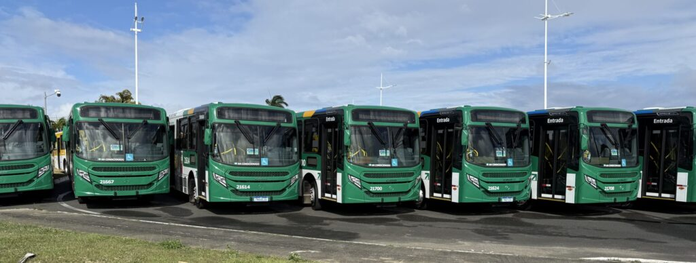

Extração
Leitura dos arquivos CSV disponibilizados na fonte de dados indicada pelo desafio.
ANALISTA DE SISTEMAS JÚNIOR
Dados abertos, tratamento em Python e análises para compreender a movimentação de passageiros. Um projeto que conecta a preparação dos registros à exploração dos resultados.
Projeto em desenvolvimento · Dados de janeiro e fevereiro de 2022

Mobilidade como ponto de partida.O PROJETO
Os registros de transporte ajudam a entender como a demanda se distribui entre dias, linhas e categorias de passageiros. Para explorar essas informações, o primeiro passo é preparar os dados.
Neste teste técnico, os arquivos de janeiro e fevereiro de 2022 passam por leitura, padronização e validação antes de serem armazenados no PostgreSQL. O Airflow organiza a execução do fluxo, e os testes verificam as regras de transformação com exemplos conhecidos.
A etapa analítica está em desenvolvimento, com consultas SQL e uma interface em Streamlit para acompanhar os resultados e explorar os registros. As escolhas e limitações do trabalho serão documentadas junto ao código.
DO ARQUIVO À ANÁLISE
Etapas que organizam o trabalho, da leitura dos arquivos à apresentação dos resultados.
Leitura dos arquivos CSV disponibilizados na fonte de dados indicada pelo desafio.
Padronização de colunas, conversão de datas e limpeza dos textos, com testes das regras.
Persistência dos dados tratados em tabelas mensais no PostgreSQL.
Desenvolvimento de consultas SQL e de um painel interativo em Streamlit.
CONSULTAS ANALÍTICAS
Cinco consultas previstas para transformar os registros em indicadores e visualizações.
Qual é a soma da demanda no período analisado?
Quantas linhas distintas estão presentes nos registros?
Qual é a demanda média considerando os dias observados?
Como a movimentação varia ao longo do período?
Quais linhas concentram os maiores volumes de demanda?
ACOMPANHE O PROJETO
Explore a apresentação no Streamlit local. Os links públicos do painel e do repositório serão adicionados após a publicação.